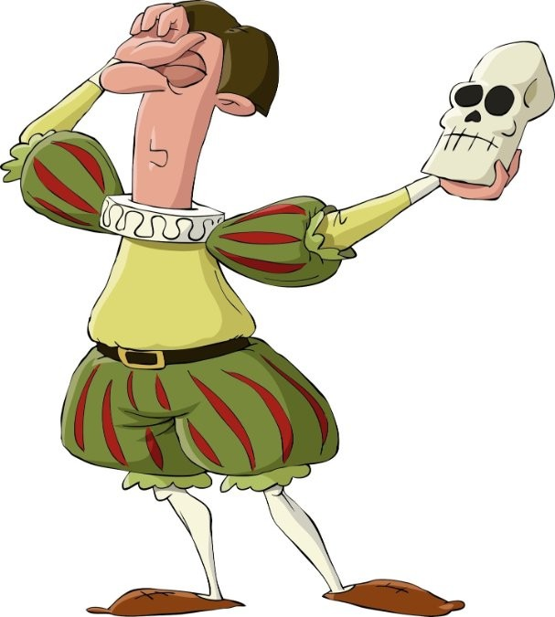

To be, or not to be: that is the question: Whether ’tis nobler in the mind to suffer The slings and arrows of outrageous fortune, Or to take arms against a sea of troubles, And by opposing end them? To die: to sleep; No more; and by a sleep to say we end The heart-ache and the thousand natural shocks That flesh is heir to, ’tis a consummation Devoutly to be wish’d. To die, to sleep;
To sleep: perchance to dream: ay, there’s the rub; For in that sleep of death what dreams may come When we have shuffled off this mortal coil, Must give us pause: there’s the respect That makes calamity of so long life;
For who would bear the whips and scorns of time, The oppressor’s wrong, the proud man’s contumely, The pangs of despised love, the law’s delay, The insolence of office and the spurns That patient merit of the unworthy takes, When he himself might his quietus make With a bare bodkin? who would fardels bear, To grunt and sweat under a weary life, But that the dread of something after death, The undiscover’d country from whose bourn No traveller returns, puzzles the will And makes us rather bear those ills we have Than fly to others that we know not of?
Thus conscience does make cowards of us all; And thus the native hue of resolution Is sicklied o’er with the pale cast of thought, And enterprises of great pith and moment With this regard their currents turn awry, And lose the name of action.—Soft you now! The fair Ophelia! Nymph, in thy orisons Be all my sins remember’d.